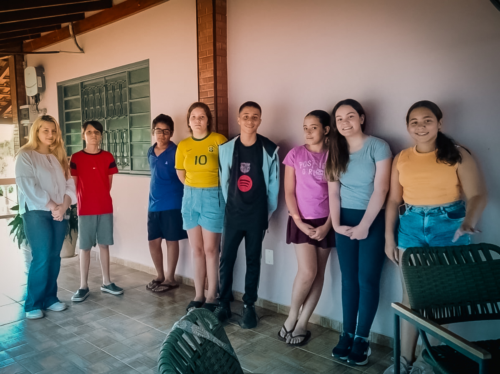

FESC 2026 · OBJETIVO MOGI
Escolha sua missão
Investigue fósseis escondidos e descubra como 4,6 bilhões de anos cabem em uma única linha.

Depois da primeira visita, o jogo também pode funcionar sem internet.
MISSÃO 01 · DETETIVE DO TEMPO
Scanner UV
Escolha uma carta, mantenha o botão pressionado para revelar o fóssil e classifique-o na era correta.
Escolha uma carta
Qualquer uma pode esconder o próximo fóssil.
Coloque no scanner
Primeiro, escolha uma carta do monte.
Escolha uma carta para começar.
A qual era ele pertence?
Observe o fóssil e escolha uma resposta.
MISSÃO CONCLUÍDA
As quatro eras foram identificadas!
Você investigou fósseis separados por bilhões de anos de história.
MISSÃO 02 · 4,6 BILHÕES DE ANOS
Linha do Tempo
Arraste cada marcador para indicar onde você acha que a era terminou. Depois, revele a escala verdadeira.
Faça suas estimativas
UMA SURPRESA DE PROPORÇÃO
A Pré-Cambriana ocupa quase toda a linha!
Ela representa cerca de 88% de toda a história da Terra. Para enxergar melhor as eras seguintes, precisamos ampliar os últimos 541 milhões de anos.
UM PONTINHO NO FINAL
O Homo sapiens chegou há cerca de 300 mil anos.
Isso equivale a apenas 0,0065% da história da Terra — pequeno demais para aparecer nesta linha sem uma ampliação enorme.